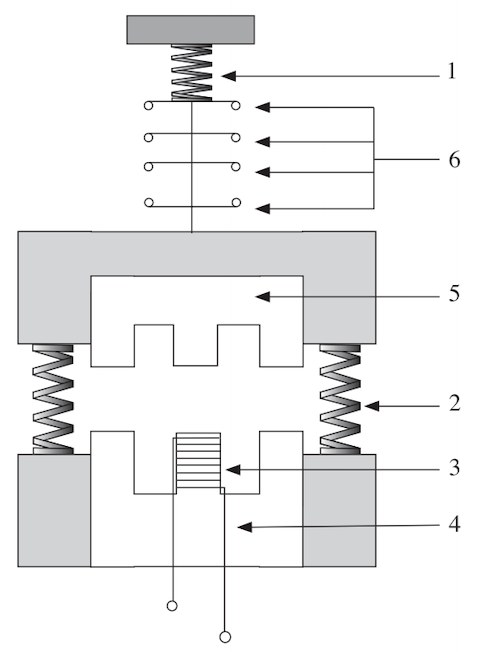
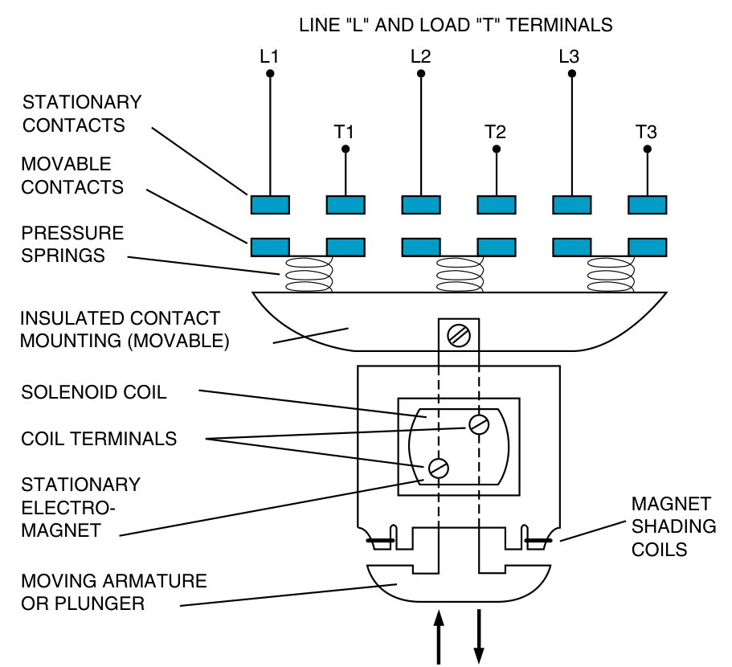
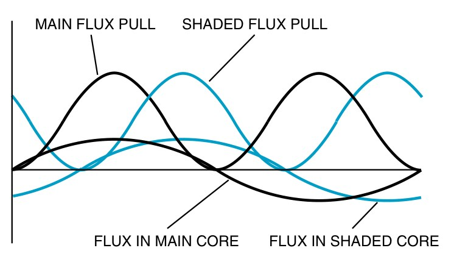

คอนแทกเตอร์ (magnetic contactor) คือสวิตช์ที่สั่งด้วยไฟฟ้า ป้อนไฟเข้าคอยล์เมื่อไร แม่เหล็กไฟฟ้าดูดแกนเหล็กเคลื่อนที่ลงมา ชุดหน้าสัมผัสทุกชุดที่ยึดอยู่บนแกนเดียวกันจึงเปลี่ยนพร้อมกัน หน้าสัมผัสหลักตัดต่อไฟเข้ามอเตอร์ หน้าสัมผัสช่วยใช้ในวงจรควบคุม หน้านี้ผ่าคอนแทกเตอร์ให้ดูข้างใน ป้อนไฟคอยล์แล้วดูการเคลื่อนที่ ลองลดแรงดันคอยล์ และอ่านเลขขั้วที่ใช้เขียนแบบ
A contactor is an electrically operated switch. When its coil is energised, the electromagnet pulls the armature in, and every contact fixed to the same carrier changes together: the main contacts switch the motor supply, the auxiliary contacts work in the control circuit. This page cuts a contactor open, lets you energise the coil and watch it move, lower the coil voltage, and read the terminal numbers used on drawings.
รูป 3.3 ของตำราไทยผ่าคอนแทกเตอร์เป็น 6 ส่วน: สปริงกดหน้าสัมผัส (1) สปริงดันกลับ (2) คอยล์ (3) แกนเหล็กอยู่กับที่ (4) แกนเหล็กเคลื่อนที่ (5) และหน้าสัมผัส (6) เมื่อคอยล์มีไฟ แกนเหล็กอยู่กับที่กลายเป็นแม่เหล็ก ดูดแกนเหล็กเคลื่อนที่ลงมาชนะแรงสปริงดันกลับ ชุดหน้าสัมผัสที่ยึดกับแกนเคลื่อนที่จึงเลื่อนตามไปทั้งชุด ตัดไฟคอยล์เมื่อไร สปริงดันกลับก็ดันทุกอย่างกลับที่เดิม
รูป 8-1 ของ EMC9 เป็นภาพตัดแบบเดียวกันที่มีชื่อทุกส่วน: หน้าสัมผัสอยู่กับที่และหน้าสัมผัสเคลื่อนที่ (แบบสะพาน ตัดสองจุด) สปริงกดหน้าสัมผัส คอยล์ แม่เหล็กอยู่กับที่ ห่วงบังแม่เหล็ก และแกนเหล็กเคลื่อนที่ ส่วนการ์ดด้านล่างเป็นภาพถ่ายคอนแทกเตอร์จริงทั้งด้านนอกและแบบถอดชิ้นส่วน
Thai textbook Fig. 3.3 cuts a contactor into six parts: the contact-pressure spring (1), the return spring (2), the coil (3), the fixed core (4), the moving core or armature (5) and the contacts (6). When the coil is energised, the fixed core becomes a magnet and pulls the armature down against the return spring; the contacts fixed to the armature all move with it. When the coil is switched off, the return spring pushes everything back.
EMC9 Fig. 8-1 is the same kind of section with every part named: stationary and movable contacts (bridge type, breaking at two points), contact-pressure springs, the coil, the stationary magnet with its shading coils, and the moving armature. The card below shows a real contactor, outside and taken apart.


กด "ป้อนไฟเข้าคอยล์" แล้วดูแกนเหล็กเคลื่อนที่ถูกดูดลงมา ช่องอากาศแคบลง ชุดหน้าสัมผัสเลื่อนลง หน้าสัมผัสช่วยปกติปิด 21–22 เปิดก่อน แล้วหน้าสัมผัสหลักกับ 13–14 จึงต่อ เปิด "แสดงช้า" เพื่อดูลำดับ และดูกราฟกระแสคอยล์: ตอนเริ่มดูดกระแสสูงกว่าตอนดูดค้างหลายเท่า จากนั้นเลื่อนแรงดันคอยล์ลงทีละน้อยขณะดูดอยู่ แล้วลองป้อนไฟใหม่ที่แรงดันต่ำ ทุกครั้งที่สถานะเปลี่ยนจะบันทึกลงตาราง
Press "Energise the coil" and watch the armature pulled down, the air gap close and the carrier move down: auxiliary NC 21–22 opens first, then the main contacts and 13–14 close. Turn on "Slow motion" to see the order, and look at the coil current: while pulling in it is several times the holding current. Then lower the coil voltage step by step while the contactor is closed, and try switching it on again at a low voltage. Every change of state is recorded below.
ไฟสลับ 50 Hz ผ่านศูนย์ 100 ครั้งต่อวินาที ทุกครั้งที่กระแสคอยล์เป็นศูนย์ แรงดูดของแม่เหล็กก็เป็นศูนย์ด้วย ถ้าไม่มีอะไรช่วย สปริงจะดันแกนเหล็กเคลื่อนที่ให้ขยับออกนิดหนึ่งทุกครั้ง เกิดเสียงครางและหน้าสัมผัสสั่น
ห่วงบังแม่เหล็กคือห่วงทองแดงที่ฝังอยู่ในส่วนหนึ่งของผิวแกนเหล็ก ฟลักซ์ที่เปลี่ยนแปลงเหนี่ยวนำกระแสในห่วง ทำให้ฟลักซ์ส่วนที่ผ่านห่วงช้ากว่าฟลักซ์หลัก กราฟแสดงว่าแรงดูดจากฟลักซ์หลักกับฟลักซ์ที่ถูกบังเป็นศูนย์คนละเวลา แรงรวมจึงไม่เป็นศูนย์เลย แกนเหล็กถูกดูดค้างนิ่ง ห่วงที่แตกหรือหลุดเป็นสาเหตุที่พบบ่อยของคอนแทกเตอร์ที่ครางดัง คอนแทกเตอร์คอยล์ไฟตรงไม่ต้องมีห่วงนี้ เพราะฟลักซ์ไม่ผ่านศูนย์
50 Hz AC passes through zero 100 times a second, and each time the coil current is zero the magnetic pull is zero too. Left alone, the spring would push the armature out a little every time, so the contactor would hum and its contacts chatter.
The shading ring is a copper loop set into part of the pole face. The changing flux induces a current in the loop, so the flux through it lags the main flux. The graph shows the pull of the main flux and of the shaded flux reaching zero at different moments, so the total pull never falls to zero and the armature stays put. A cracked or missing shading ring is a common cause of a loudly humming contactor. A direct current (DC) coil needs none, because its flux never passes through zero.

คอนแทกเตอร์ KM1 มีหน้าสัมผัสช่วยในตัว 1 ชุดคือปกติเปิด 13–14 วงจรต้องการหน้าสัมผัสช่วยเพิ่มอีก 2 ปกติเปิดและ 2 ปกติปิด จึงเสียบชุดหน้าสัมผัสเสริมด้านหน้า 1 ชุดที่มี 4 หน้าสัมผัส (2 NO + 2 NC) (ก) หน้าสัมผัสทั้งหมดของ KM1 ใช้เลขขั้วอะไรบ้าง (ข) ในแบบต้องตั้งชื่อหน้าสัมผัสเสริมว่าอะไร (ค) ทำไมจึงไม่ควรใช้หน้าสัมผัสหลักแทนหน้าสัมผัสช่วยในวงจรควบคุม
Contactor KM1 has one built-in auxiliary contact, NO 13–14. The circuit needs two more NO and two NC auxiliary contacts, so a four-pole front-mounted block (2 NO + 2 NC) is added. (a) What are the terminal numbers of all KM1's contacts? (b) What name do the block's contacts get on the drawing? (c) Why should a main contact not be used instead of an auxiliary one in the control circuit?
สวิตช์ S1 ป้อนไฟเข้าคอยล์ KM1 ผ่านหน้าสัมผัสโอเวอร์โหลด F2 95–96 (ปกติปิด) หน้าสัมผัสช่วยปกติเปิด 13–14 ต่อหลอดเขียว H1 และหน้าสัมผัสช่วยปกติปิด 21–22 ต่อหลอดขาว H2 (หยุดอยู่) ด้านซ้ายคือวงจรกำลัง: หน้าสัมผัสหลักของ KM1 ตัวเดียวกันสั่งมอเตอร์ และ F2 ตัวเดียวกันป้องกันมอเตอร์ แตะ S1 ในวงจร หรือแตะ 0 / I ที่สวิตช์ S1 บนประตูตู้ด้านล่าง ซึ่งมีหลอด H1 และ H2 ติดให้เห็นเหมือนตู้จริง แตะ F2 เพื่อจำลองว่าโอเวอร์โหลดตัด (95–96 เปิด KM1 หลุด) แตะอีกครั้งเพื่อรีเซ็ต แล้วดูตารางอ้างอิงใต้คอยล์ ซึ่งบอกว่าหน้าสัมผัสแต่ละตัวของ KM1 อยู่ทางเดินกระแสไหน
Switch S1 energises coil KM1 through overload contact F2 95–96 (NC); auxiliary NO 13–14 lights green lamp H1 and auxiliary NC 21–22 lights white lamp H2 (stopped). On the left is the power circuit: the main contacts of the same KM1 run the motor, and the same F2 protects it. Tap S1 in the circuit, or 0 / I on switch S1 on the panel door below, where lamps H1 and H2 light as on a real panel; tap F2 to simulate an overload trip (95–96 opens, KM1 drops out) and tap it again to reset. Read the cross-reference under the coil, which says in which current path each KM1 contact sits.